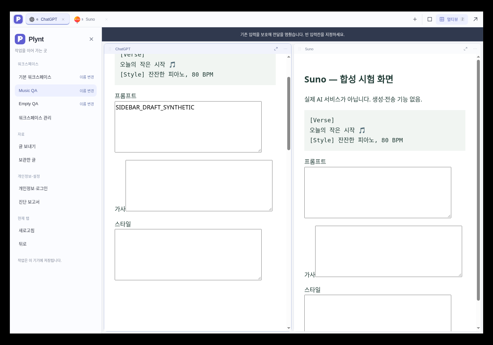

열어 둔 작업을 다시 찾기 쉽게
최대 30개 탭에 별칭을 붙이고 워크스페이스로 저장합니다. 플린트 아이콘을 눌러 사이드바에서 작업을 전환하거나 저장된 이름을 바꾸세요.
좋은 답변을 다음 작업으로 옮길 때마다
화면을 찾고, 복사하고, 다시 붙여넣으셨나요?
Plynt는 여러 AI의 원본 웹 화면과 다시 쓸 글을 모아 두는 앱입니다. 탭을 오가고, 글을 전달하고, 작업 구성을 이어 가세요.
Android · Windows · macOS · Linux
새 AI를 배우는 대신,
이미 쓰는 AI 사이를 연결합니다.
ChatGPT의 채팅과 프로젝트, Codex Cloud 웹 작업을 따로 열어 두세요. Suno·Canva 같은 서비스도 바로가기로 찾거나 직접 웹 주소를 추가할 수 있습니다.
설치된 다른 앱을 안에서 실행하는 방식이 아닌, 각 서비스의 웹사이트를 여는 앱입니다. 계정·구독은 해당 서비스에서 관리합니다.
최대 30개 탭에 별칭을 붙이고 워크스페이스로 저장합니다. 플린트 아이콘을 눌러 사이드바에서 작업을 전환하거나 저장된 이름을 바꾸세요.
선택한 글이나 복사한 답변을 미리 보고, 받을 탭을 고릅니다. 빈 입력칸을 터치하고 ‘여기에 넣기’로 확인하세요. 기존 초안은 보호하고, 전송·생성은 직접 결정합니다.
데스크톱과 Android 태블릿에서는 최대 4개 패널을 2×2 또는 좌우 열로 배치합니다. 패널을 끌어 위치를 바꾸고, 나머지 탭은 전체 화면으로 엽니다. 휴대폰은 한 화면에 집중합니다.
탭 맨 앞의 작은 플린트 아이콘에서 시작합니다.

‘+’에서 서비스를 고르거나 HTTPS 주소를 입력합니다. 필요한 서비스에는 정상 로그인 화면에서 직접 로그인하세요.
우클릭·길게 누르기 또는 상단 글 보내기를 사용합니다. 내용을 확인하고 대상 탭의 빈 입력칸에 넣습니다.
사이드바에서 이름을 붙여 저장합니다. 다음 실행에서 탭 주소·별칭·구성을 이어 갑니다.
무료 시험판입니다. GitHub Releases의 Assets에서
운영체제에 맞는 파일을 선택하세요.
스토어 등록 전 프리뷰입니다. 데스크톱은 공인 서명·Apple 공증 전이며 Android는 디버그 서명 시험판입니다. iPhone·iPad 앱은 아직 없습니다. 설치 전 릴리스의 업데이트·서명 안내와 체크섬을 확인해 주세요.
이 기기의 앱 저장소와 웹 엔진에 보관됩니다. 자체 계정·기기간 동기화는 없으며 비밀번호를 별도로 수집하지 않습니다. 서비스가 세션을 만료시키면 다시 로그인해야 합니다.
아직 확인되지 않았습니다. 현재 검사는 합성 화면을 이용합니다. 실제 ChatGPT·Suno·Canva에 로그인한 뒤 입력하는 전체 흐름은 미검증이며, 서비스의 페이지 구조와 내장 브라우저 정책에 따라 제한될 수 있습니다.
탭 주소·별칭·배치와 보관한 글을 복원합니다. 웹사이트 내부의 작성 중인 초안·스크롤·디자인 편집 상태까지 재실행 후 복원하는 것은 보장하지 않습니다. 이미지·음악·파일 전달은 아직 지원하지 않습니다.
앱의 진단에는 대화 원문·주소·별칭·비밀번호·쿠키·화면 캡처를 넣지 않습니다. 기기에서 미리 보고 직접 내보낼 수 있으며 자동 업로드하지 않습니다. 개인정보 안내에서 자세히 확인하세요.
Plynt brings original AI websites into named tabs, saves local workspaces, and helps you move selected or copied text to another tab’s empty input. Keep up to 30 tabs; use up to four panels on desktop and Android tablets. Phones keep a single panel.
This is a free preview for Android, Windows, macOS and Linux. Tests use synthetic pages; authenticated ChatGPT → Suno or Canva workflows remain unverified. No automatic sending or generation, cloud sync, media transfer, or iOS app. Read the release notes before installing.
Read the English README